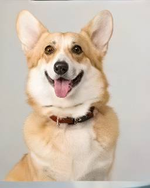
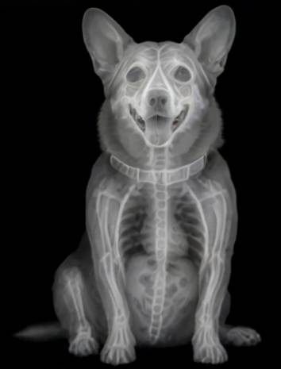
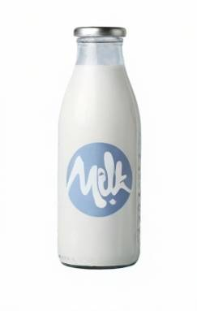
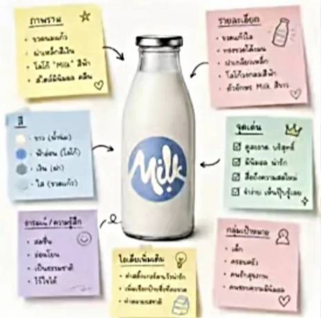
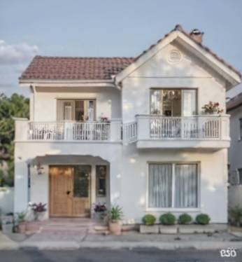
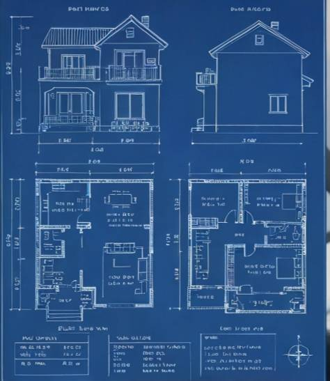

คำแนะนำการใช้งาน: เหมาะสำหรับการคิดไอเดีย งานเขียนคอนเทนต์ ตอบคำถามทั่วไป สรุปความ และสร้างหรือแปลงสไตล์ภาพตามสั่งด้วยฟีเจอร์ Image Generation
🧠 เทคนิคสั่งแปลงรูปภาพ (Slash Commands)
➔
/explodedview
คำอธิบาย: แปลงภาพถ่ายสินค้าปกติ ให้กลายเป็นภาพแยกชิ้นส่วนเชิงเทคนิค (Exploded View) โชว์กลไกภายในให้ดูมีความเป็นมืออาชีพ

➔

/xray
คำอธิบาย: จำลองภาพสไตล์เอกซเรย์ มองทะลุผ่านพื้นผิวภายนอก เข้าไปเห็นโครงสร้างกระดูกหรือกลไกภายใน เพิ่มความแปลกตา
➔
/handwritten
คำอธิบาย: เปลี่ยนภาพถ่ายทั่วไปให้กลายเป็นงานสเก็ตช์ภาพวาดด้วยดินสอ เห็นรายละเอียดลายเส้นและการแรเงาอย่างสมจริง ให้ความรู้สึกเหมือนภาพวาดด้วยมือ

➔

/stickynotes
คำอธิบาย: สร้างภาพอินโฟกราฟิกจำลองกระดาษโน้ตแปะรอบสินค้า พร้อมลูกศรชี้จุดเด่น เหมาะสำหรับทำรีวิว

➔

/blueprint
คำอธิบาย: แปลงภาพถ่ายให้กลายเป็นพิมพ์เขียวทางสถาปัตยกรรมหรือวิศวกรรม ลายเส้นสีขาวบนพื้นหลังสีน้ำเงินเข้ม
🎬 วิดีโอแนะนำการใช้งาน ChatGPT:
รับชมคลิปสอนใช้งานอย่างละเอียดบน YouTube
▶ ดูคลิปบน YouTube